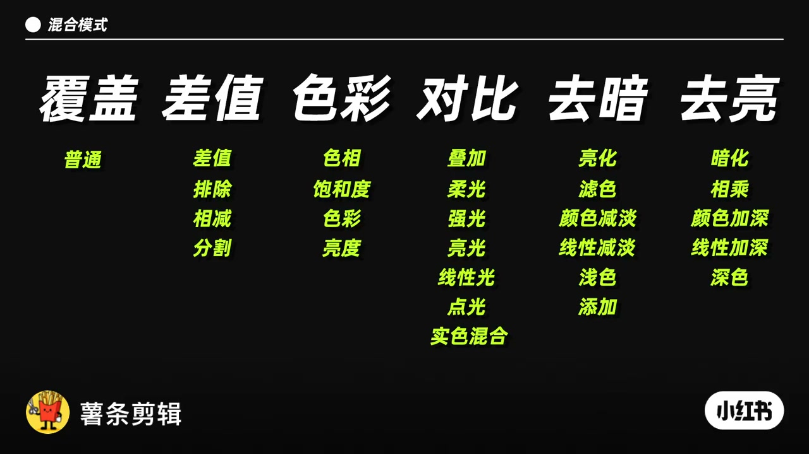
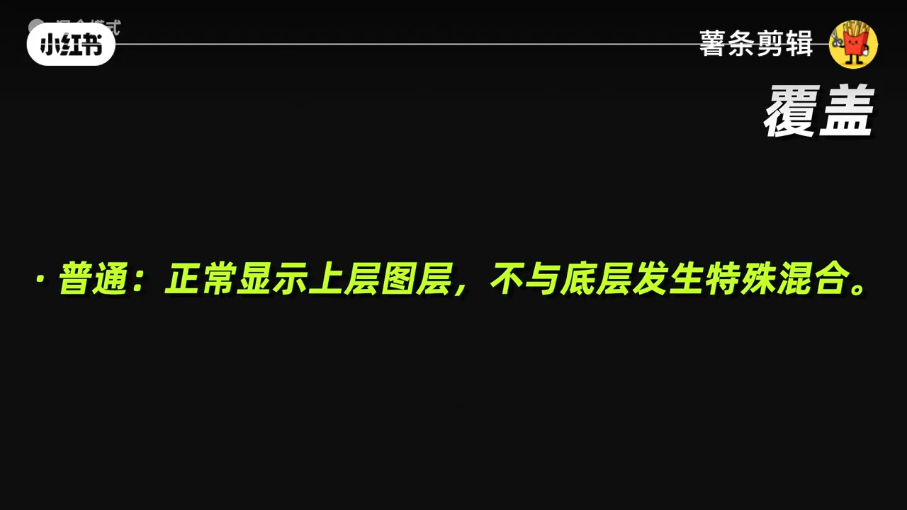
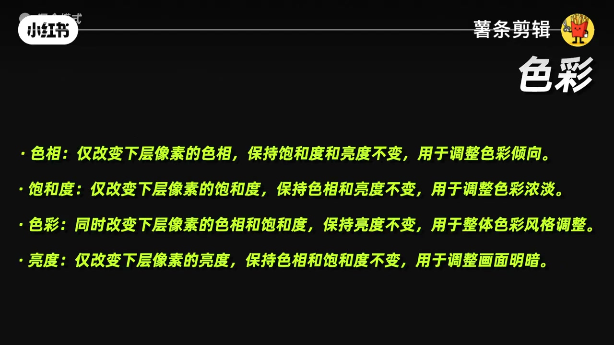
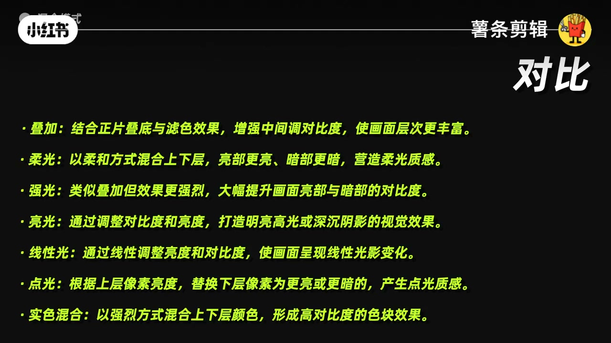
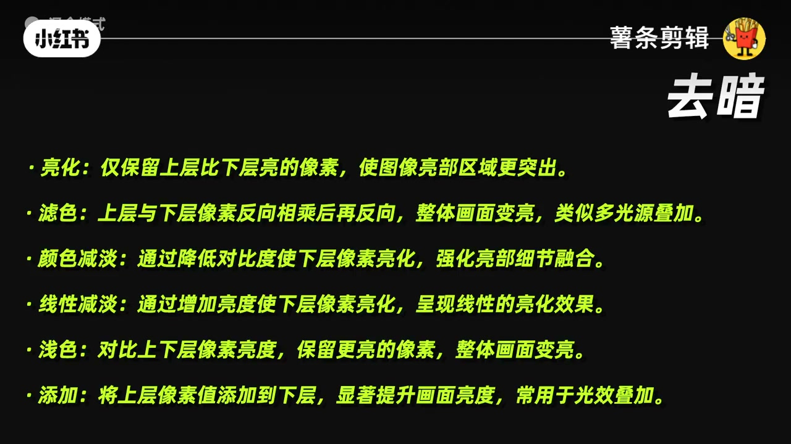
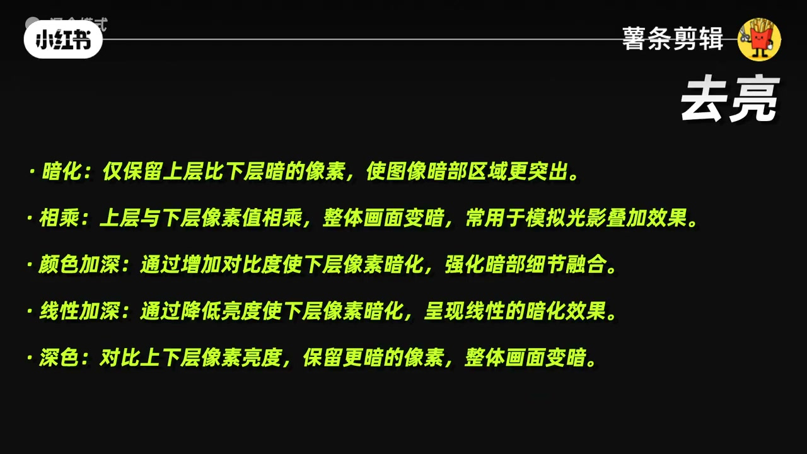

内容要点
薯条用约29秒卡片把图层节点混合模式收成六类共约27种：先认类，再按「改亮度 / 改颜色 / 加对比」选型。图层节点把上层像素按模式叠到下层——调色页串节点时，混合模式决定「这一层到底在改什么」。
知识结构
[00:00–00:08]
总览+覆盖
六类地图；普通=不混合。
[00:08–00:18]
色彩/对比
色相饱和亮度拆开改；叠加系加对比。
[00:18–00:29]
去暗/去亮
提亮光效 vs 压暗阴影。
总结
先选「去暗/去亮/对比/色彩」大类，再挑具体模式；普通只是显示上层，不是万能默认。
适用边界：讲的是调色页图层节点混合模式分类速查；不替代曲线/HDR 轮、也不展开 Fusion Merge。
踩坑：在错误大类里微调（例如只想加对比却用了色彩组）会改偏色相；Add/滤色过猛易爆高光。
00:00–00:08六类总览与覆盖
总表六列：覆盖、差值、色彩、对比、去暗、去亮。覆盖类核心是普通：上层原样显示，不与底层做特殊运算——适合「先看清这一层贡献了什么」。
选用步骤
- 明确目的：提亮 / 压暗 / 加对比 / 只改颜色。
- 落到六类之一，再选具体模式。
- 图层节点上改混合模式，开关对比前后。

[00:02] 总览：混合模式六类——覆盖/差值/色彩/对比/去暗/去亮
Overview: six blend-mode families—Cover, Difference, Color, Contrast, Lighten, Darken

[00:05] 覆盖：普通——上层正常显示，不与底层特殊混合
Cover/Normal: show the upper layer as-is, no special blend
00:08–00:18色彩组与对比组
色彩组：色相（只改倾向）、饱和度（只改浓淡）、色彩（色相+饱和、保亮度）、亮度（只改明暗）。适合「换风格但不想动结构光影」。对比组：叠加/柔光/强光/亮光/线性光/点光/实色混合——从柔到烈加强中间调对比；实色混合易出色块，慎用于写实人像。

[00:09] 色彩组：色相/饱和度/色彩/亮度——各改一层属性、保其余
Color family: Hue/Sat/Color/Luminosity—each edits one attribute

[00:13] 对比组：叠加到实色混合——强化中间调与光影对比
Contrast family: Overlay through Hard Mix—boost midtone contrast

[00:17] 对比组细则：柔光偏柔、强光更烈、点光/实色偏色块
Contrast detail: Soft Light gentle, Hard Light stronger, Pin/Hard Mix posterize
00:18–00:29去暗组与去亮组
去暗（提亮）：亮化、滤色、颜色减淡、线性减淡、浅色、添加——滤色像多光源叠加，添加常叠光效。去亮（压暗）：暗化、相乘、颜色加深、线性加深、深色——相乘常模拟阴影叠层。差值类（差值/排除/相减/分割）偏特效与对位检查，本片总表有列、正文以实用四组为主。
[00:21] 去暗组：亮化/滤色/减淡/浅色/添加——整体提亮与光效
Lighten family: Lighten/Screen/Dodges/Add—brighten and glow FX

[00:25] 去暗组续：滤色像多光源；添加常用于光效叠加
Lighten continued: Screen ≈ multi-light; Add for light overlays

[00:28] 去亮组：暗化/相乘/加深/深色——压暗与阴影叠加
Darken family: Darken/Multiply/Burns/Darker Color—crush and shadows
画面要点
口播几乎只有标题；以下按卡片内容整理。
达芬奇图层节点27种混合模式详解
六类：覆盖 / 差值 / 色彩 / 对比 / 去暗 / 去亮
色彩：色相、饱和度、色彩、亮度定义
对比：叠加→实色混合七种
去暗六种提亮模式
去亮五种压暗模式